Durup
Grobkörniger rötlicher, gestreifter Granit
Höhe: 78 cm
Größte Breite: 73 cm
Dicke ca. : 31 cm
Runenhöhe: 15 - 17 cm
Kreuzgröße: 10,5 x 7 cm
Runeninschrift :
(N.N. errichtete) diesen Stein zum Gedenken an Tóki [seinen Bruder/Vater]? einen wohlgebürtigen (Thegn). (oder: nach Tóki, seinem guten [Bruder/Vater])

39 - Durup - Letztes Update 24.08.2025
Listennummer : DR 129 / DK NJy 49
| Navidaten: 56.70342 9.63051 oder: Solhøjvej 7, 9610 Nørager |
Transliteration: ...i : stain : þasi : at : tuka | ...(n) : kuþan +
Dieser Runenstein wurde im Jahre 1885 bei der Restauration der Durup Kirche als Grundstein gefunden. Danach wurde er allerdings im Unverstand in viele Stücke gehauen. Später fand sich nur noch ein einzelnes Bruchstück, die linke Seite der Spitze. Dieses wurde daraufhin vom damaligen Gutsbesitzer, Frederik Jensen Bisgaard (*16.08.1816 - 14.09.1879), zum nahegelegenen Herrenhof Nøragergård gebracht und dort aufgestellt. Er hatte das Anwesen 1839 von seinem Vater, Jens Bisgaard (*1767 - 16.08.1842) , geerbt, der den Gutshof 1809 käuflich erworben hatte. Eine erste Zeichnung wurde von Emmery Rondahl (*26.12.1858 - 05.03.1914, Zeichner und Maler - link-LIVES - Bestattungsprotokoll)
 Bildquelle:
Digitale Sammlung - Königliche Bibliothek Kopenhagen -
Lizenz:
Public Domain
Bildquelle:
Digitale Sammlung - Königliche Bibliothek Kopenhagen -
Lizenz:
Public Domain
1885 gefertigt, die sich im Nationalarchiv erhalten hat - dem Antikvarisk -Topografisk Arkiv, das dem Nationalmuseum in Kopenhagen angegliedert ist. Auf e-Mail Anfrage hin wurde mir diese Zeichnung herausgesucht, eingescannt und am 18.02.2025 zugemailt. Tusind tak Dánial!
 Lizenz:
Public Domain
Lizenz:
Public Domain
Der Runenstein wird von den Runologen in die Zeit von 970 bis 1020 eingeordnet. Die erhaltene Inschrift beginnt in der rechten Linie von unten nach oben und setzt sich in der linken Linie ebenfalls von unten nach oben fort. Darüber ist ein einfaches Kreuz - 10,5 x 7 cm - von der Art wie beim Stein von Vester Tørslev, eingemeißelt, das eventuell auch erst später hinzugefügt wurde. Das linke Runenband weist auch eine nach innen gewandte Spiralornamentik auf.
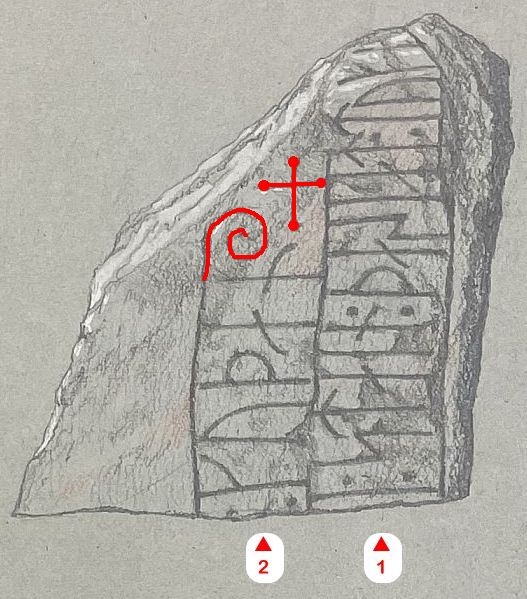
Leserichtung / Ornamentik von mir eingefügt - basierend auf einer Zeichnung von Magnus Petersen vom 21.07.1892 - Lizenz: Public DomainDieser Herrenhof war ziemlich heruntergekommen. Am 12.09.2005 gab es dazu noch einen verheerenden Brand. Er wurde ab 2009 wieder aufgebaut und die Arbeiten konnten 2011 abgeschlossen werden. Der Park und der umliegende Wald sind 12,15 Hektar groß.
Der heutige Standort des Runensteines fand ich anfangs nur schwerlich. Von der E45-Autobahnanschlussstelle Nr. 34 folgt man der Straße 29 in Richtung Aars. In Nørager angekommen fährt man die erste Straße nach links in Richtung T(h)orup. Nach etwa 300 m geht ein Weg nach links ab. Diesem folgt man und lässt die Wirtschaftsgebäude und den Herrenhof rechts liegen. An der kurz darauf folgenden Wegkreuzung geht es nach rechts und nach ca. 30 m steht der Runenstein vor einem großen Baum.
Deshalb habe ich inzwischen aus den EXIF Daten - den dort zu findenden geografischen Koordinaten - eines mit meinem iPhone 12 Pro beim letzten Besuch in 2022 gefertigten Fotos des Runensteins dessen (vermeintlich) genauen Standort in dem oben eingebetteten Google Maps Kartenauschnitt korrekt erfasst.
Am 23.11.2015 wurde in den dänischen Medien über den Diebstahl dieses Runensteins berichtet. Der aktuelle Besitzer des Herrenhofes, Carsten Palvig (Softwareentwickler im Ruhestand), entdeckte den Diebstahl zufällig. Dieser hatte das Anwesen gemeinsam mit Erik Palvig 1983 gekauft und besitzt es seit 1990 alleine. Im Herbst und im Winter deckt er den Runenstein mit einer hölzernen Schutzbox ab, um Frostrisse zu verhindern. Herr Palvig wollte ihn sich am Sonntag, 22.11.2015, ansehen und war sehr überrascht, als er nicht mehr an seinem Platz war. Über seine Überwachungskameras konnte er feststellen, dass der Runenstein am Montag, 02.11.2015, um 15.45 Uhr, von zwei Männer auf eine Sackkarre geladen und dann mit einem großen, weißen Pickup abtransportiert wurde. Auf dem Filmmaterial sieht man aber auch, dass die Diebe zunächst um das Hauptgebäude von Nøragergård herumlaufen, an die Türen klopfen und als niemand antwortet, auf den Stein zulaufen und ihn kurz darauf abtransportieren. Der Gutsbesitzer hat nach der Entdeckung umgehend Anzeige bei der örtlichen Polizei erstattet.
Wie sich aber im Laufe der polizeilichen Ermittlungen herausstellte, war der Runenstein auf Veranlassung der Kulturbehörde durch den Steinrestaurator Leif Mogensen abgeholt und überarbeitet worden. Als Herr Palvig die Kulturbehörde über den Diebstahl informierte, wusste sein Gesprächspartner dort allerdings von nichts. Später musste man sich eingestehen, dass der Auftrag zur Abholung doch von dort aus veranlasst wurde. Dummerweise hatte man den Gutsbesitzer Palvig und auch die Polizei nicht darüber informiert. Der Runenstein kam kurz darauf gereinigt und wohlbehalten an seinen angestammten Platz zurück.
Nun ja, immerhin ist er nicht besonders groß, steht an einem abseits gelegenen Ort in einem Waldstück, so dass ein Diebstahl durchaus denkbar gewesen wäre.
Im Rahmen meiner 2022er Jütland Wikingertour war ich letztmals am Samstag, 04.06.2002, hier.
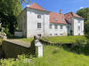 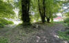 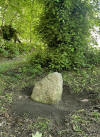 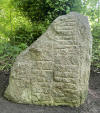 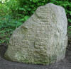 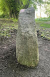 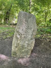 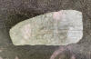 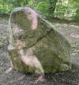


Erstmals war ich am Dienstag, 30.09.2003, vor Ort. Dazwischen habe ich diese Fotos bei meinem Besuch vor Ort am Feitag, 23.08.2013, aufgenommen:
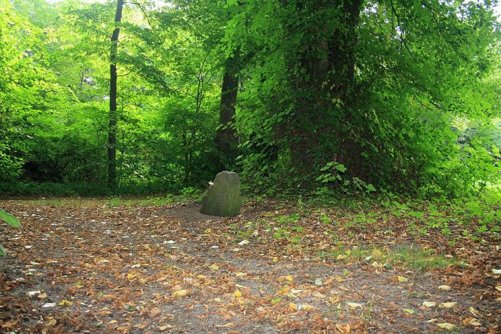
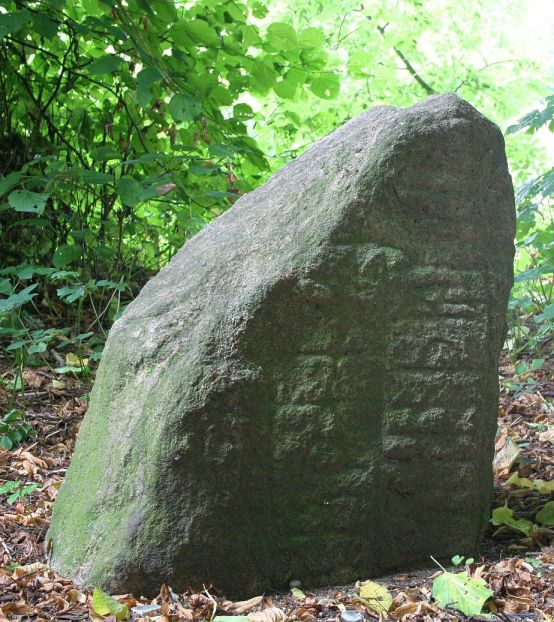
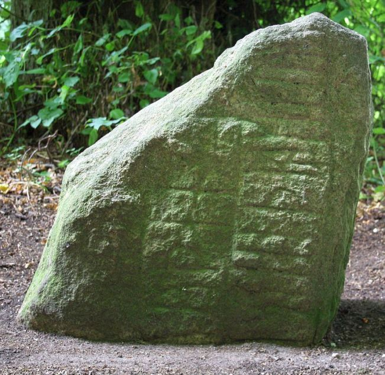
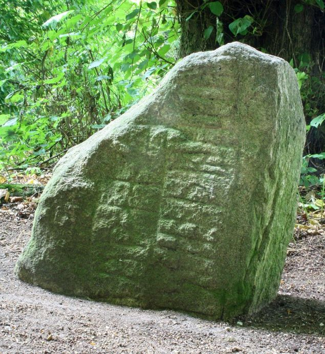
Durch Prof. Ludv. F. A. Wimmer (*07.02.1839 - 29.04.1920, Philologe und Runenforscher - link-LIVES - Politiets registerblade - Bestattungsprotokoll)
 Bildquelle:
Fotografie zw. 1877-1900 von Fotograf Hansen & Weller
-
Det Kgl. Biblioteks billedsamling - Lizenz:
Public Domain
Bildquelle:
Fotografie zw. 1877-1900 von Fotograf Hansen & Weller
-
Det Kgl. Biblioteks billedsamling - Lizenz:
Public Domain
wurde eine Zeichnung von Prof. Julius Magnus Petersen (*04.09.1827 - 31.01.1917, Archäologischer Zeichner und Restaurator - link-LIVES - Bestattungsprotokoll)
 Bildquelle: Fotografie
von 1903 von Fotograf Marius Christensen
(*24.06.1874 -
25.06.1907) -
Det Kgl. Biblioteks billedsamling - Lizenz:
Public Domain
Bildquelle: Fotografie
von 1903 von Fotograf Marius Christensen
(*24.06.1874 -
25.06.1907) -
Det Kgl. Biblioteks billedsamling - Lizenz:
Public Domain
in seinem Werk De danske runemindesmærker undersøgte og tolkede af Ludv. F. A. Wimmer, Andet Bind, Runestenene i Jylland og på øerne. 1899-1901, Nr. 20, S. 128 veröffentlicht. Wimmer hat den Runenstein persönlich vor Ort am 21. Juli 1892 untersucht.
Eigener Scan (01.10.2021) aus der in meinem Besitz befindlichen Ausgabe.
Ludv. F. A. Wimmer hat seine jahrelangen Aufzeichnungen der "Kgl. Bibliotek" in Kopenhagen überlassen. Ein Verzeichnis darüber wurde 1915 in Buchform herausgegeben - "Collectio runologica Wimmeriana: Fortegnelse over Ludv. F. A. Wimmers runologiske o. a. Samlinger i Det kgl. Bibliotek"
In seinen Unterlagen in der Bibliothek befinden sich unter "III - Originaltegninger af de danske Runemindesmærker, udførte paa Undersøgelsesrejserne af Magn. Petersen og kontrollerede paa Stedet af Ludv. Wimmer, samt Prøvetryk af de paa Grundlag af de nævnte Tegninger, Aftryk o. s. v. til De danske Runemindesmærker" udførte Afbildninger med Wimmers Rettelser"


zu dem Runenstein von Durup unter der Nr. 34 Aufzeichnungen von 1892, wobei ich am 27.09.2022 diese Zeichnung von Magnus Petersen - datiert auf den 21.07.1892 - fotografieren durfte.

Anhand einer Kopie dieser Zeichnung hat Wimmer nochmals diese Überarbeitungen - die er rechts oben auf den 18.01.1893 datiert hat - vorgenommen.

Durch Erik Moltke (*04.04.1901 - 19.10.1984, Runologe, Historiker - link-LIVES)
 Bildquelle: Scan von Buchumschlag "Runerne i Danmark og ders
oprindelse" - Erik Moltke - 1976 - Lizenz:
CC-BY-SA
Bildquelle: Scan von Buchumschlag "Runerne i Danmark og ders
oprindelse" - Erik Moltke - 1976 - Lizenz:
CC-BY-SA
wurde diese sw Fotografie des Runensteins am 13.05.1931 aufgenommen.
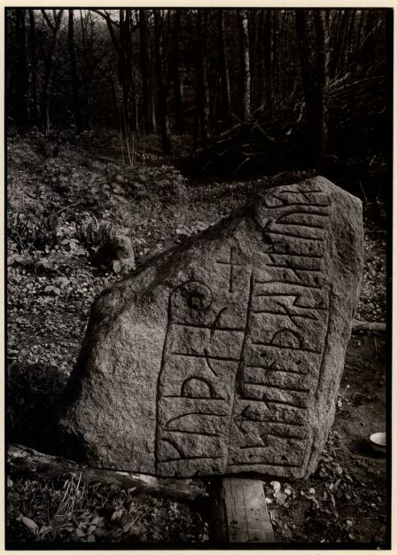
Quelle: Digitale Sammlung des Nationalmuseums in Kopenhagen - Lizenz: CC-BY-SA
Im Vorfeld zu dem 2016 erschienenen Buch von Lisbeth M. Imer (*1973, Runologin am Nationalmuseum Kopenhagen) "Danmarks Runesten - en fortælling" reiste sie mit dem Fotografen Roberto Fortuna zur Bestandsaufnahme durch die Lande. Dieser hat die Runensteine meist abends bei Dunkelheit mit Schräglicht aufgenommen und darüber wirklich herausragende Fotos erzielt. Diese Aufnahme ist aus dem 23.10.2012.
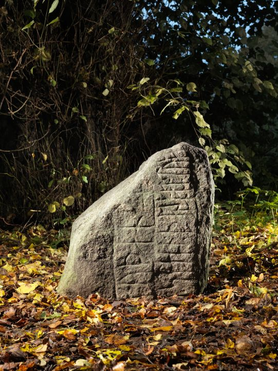
Quelle: Digitale Sammlung des Nationalmuseums in Kopenhagen - Lizenz: CC-BY-SA
Den Eintrag zu diesem Runenstein aus der dänischen Runen Datenbank im Internet kann man hier abrufen.
Die Informationen in "Fund og Fortidsminder" zu dem Runenstein finden sich hier. Darin ist inzwischen dieser Zustandsbericht des Steinrestaurators Leif Vognsen aus dem Jahr 2018 eingebettet.
Über diesen Link finden sich zu dem Runenstein Informationen des Forschungsprojektes "Runes" der Akademie der Wissenschaften zu Göttingen.